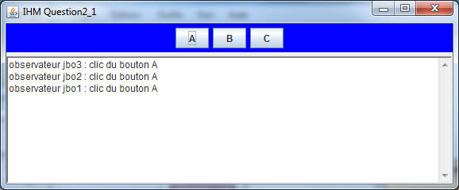
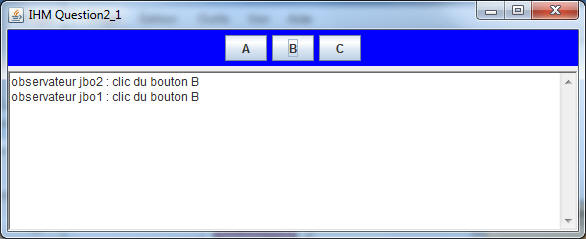
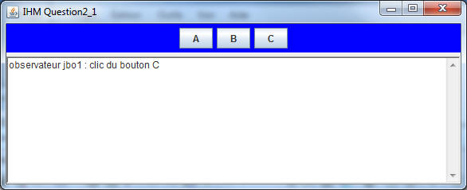
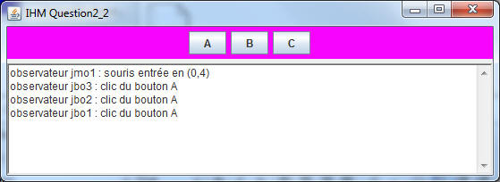
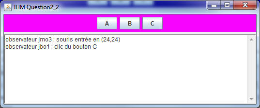
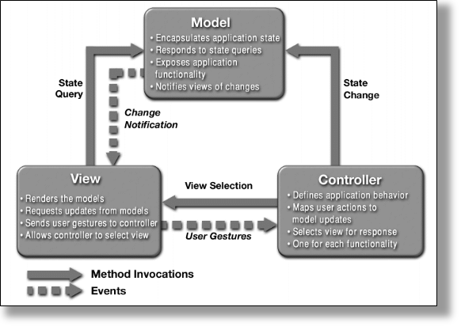
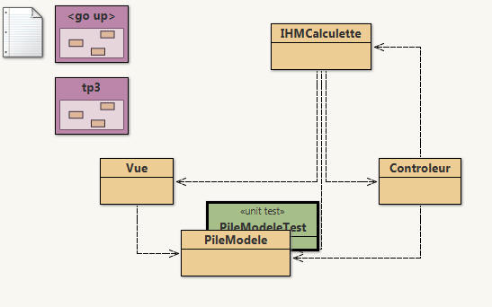

Pattern Observateur/Observ�
Pattern Observateur/Observ�
Soit le Pattern Observateur en notation UML selon LA r�f�rence en pattern : "Design Patterns Elements of Reusable Object-Oriented Software" , Erich Gamma, Richard Helm, Ralph Johnson and John Vlissides (GOF) , ed. Addison-Wesley, 1995. (existe en fran�ais)

En Java, le paquetage java.util impl�mente ce Pattern.
Il propose la classe Observable pour "Subject" du diagramme ci dessus et l'interface Observer (m�me nom dans le diagramme ci dessus) (lire leur javadoc dans la documentation JAVA).
Les participants
Premier exemple d'implantation de ce pattern en Java.
Classes retenues et propos�e dans le paquetage "question1" :
Pour cette premi�re question, nous souhaitons d�velopper une classe de tests afin de "v�rifier" le fonctionnement de l'implantation de ce Pattern,
Quelques exemples de "validation", d'assertions
Extrait du code de v�rification : classe "PatternObservateur"
Il propose la classe Observable pour "Subject" du diagramme ci dessus et l'interface Observer (m�me nom dans le diagramme ci dessus) (lire leur javadoc dans la documentation JAVA).
Les participants
- L'observ� : la classe Subject ou java.util.Observable
- L'observateur : ici l'interface Observer ou java.util.Observer
- L'observ� concret : la classe ConcreteSubject qui h�rite de Observable
- L'observateur concret :la classe ConcreteObserver , qui impl�mente l'interface Observer, et qui utilise une r�f�rence du sujet ConcreteSubject qu'il observe et r�agit � chaque mise � jour
Premier exemple d'implantation de ce pattern en Java.
Classes retenues et propos�e dans le paquetage "question1" :
- La classe ConcreteSubject h�rite de java.util.Observable (l'observ�) et g�re une liste de chaines (String), chaque modification de cette liste - introduction d'une nouvelle cha�ne - (cf. m�thode insert) engendre une notification aux observateurs en passant la nouvelle cha�ne en param�tre...
- La classe ConcreteObserver (observateur) � chaque notification, affiche cette nouvelle cha�ne et m�morise l'origine des notifications (attribut "senders") et les param�tres transmis (attribut "parameters").
- La m�morisation du notifiant et du param�tre transmis utilise deux piles (java.util.Stack
), senders et arguments, accessibles de l'"ext�rieur" par les m�thodes "public Stack senders(){...}" et "public Stackparameters(){...}"
Pour cette premi�re question, nous souhaitons d�velopper une classe de tests afin de "v�rifier" le fonctionnement de l'implantation de ce Pattern,
Quelques exemples de "validation", d'assertions
- V�rifier que lors d'une notification, TOUS les observateurs ont bien �t� inform�s,
- V�rifier que les arguments ont bien �t� transmis
- V�rifier que le notifiant est le bon ...etc ...
Extrait du code de v�rification : classe "PatternObservateur"
public class PatternObservateur extends junit.framework.TestCase {
public void testNotify() {
ConcreteSubject list;
ConcreteObserver observer;
list = new ConcreteSubject(); // création d'un "observé" constitué d'une liste
observer = new ConcreteObserver(); // création d'un observateur
list.addObserver(observer); // ajouter cet observateur à la liste
list.insert("il fait beau, ce matin"); // modification de cette liste, l'observateur doit
// (dervrait) être notifié
// "vérification" :
assertFalse(observer.senders().empty()); // elle ne doit pas être vide,
assertEquals(list, observer.senders().pop()); // est-ce le bon émetteur ?
assertEquals("il fait beau, ce matin", observer.arguments().pop()); // le paramètre reçu est-il correct ?
}
//...
Un exemple de test avec BlueJ: v�rification qu'un observateur est bien notifi� avec le param�tre bien re�u.
Compl�tez les 3 m�thodes de test de la classe "PatternObservateur".
Compl�tez les 3 m�thodes de test de la classe "PatternObservateur".

 Introduction aux �v�nements de l'AWT
Introduction aux �v�nements de l'AWT
(paquetage java.awt.event, �v�nements engendr�s par une instance de la classe javax.swing.JButton)
En java, les api AWT ou SWING utilise le pattern Observateur pour la gestion des �v�nements, seuls les noms des m�thodes diff�rent. Les notifications sont ici engendr�es par un changement d'�tat de l'interface graphique : un clic sur un bouton, un d�placement de souris, etc...
Exemple :
Compl�ter les classes IHMQuestion2_1 et JButtonObserver afin d'obtenir les m�mes copies �cran
En java, les api AWT ou SWING utilise le pattern Observateur pour la gestion des �v�nements, seuls les noms des m�thodes diff�rent. Les notifications sont ici engendr�es par un changement d'�tat de l'interface graphique : un clic sur un bouton, un d�placement de souris, etc...
Exemple :
- La classe Observable "est remplac�e par" la classe javax.swing.JButton
- La m�thode addObserver(Observer o) "correspond �" addActionListener(ActionListener l)
- La m�thode notifyObservers(Object arg) "est remplac�e par" actionPerformed(ActionEvent ae)
- L'interface Observer "est remplac�e par" l'interface java.awt.event.ActionListener
- Le bouton A a 3 observateurs (jbo1, jbo2 et jbo3)
- 
- Le bouton B a 2 observateurs (jbo1 et jbo2)
- 
- Le bouton C a 1 observateur (jbo1)
- 
Compl�ter les classes IHMQuestion2_1 et JButtonObserver afin d'obtenir les m�mes copies �cran
 La classe JMouseObserver
La classe JMouseObserver
Cette fois :
- La m�thode addObserver est remplac�e par java.awt.event.addMouseListener.
- La m�thode notifyObservers() est remplac�e par mouseXXXXX(MouseEvent ae).
- L'interface Observer est remplac�e par l'interface java.awt.event.MouseListener.
A chaque d�placement de la souris vers l'un des boutons, un observateur est r�veill� :
- Le bouton A a 4 observateurs (jmo1) et (jbo1, jbo2 et jbo3), ici la souris est entr�e sur le bouton A
-

- la souris est entr�e et un clic a eu lieu sur le bouton A(cf. question2_1)
- 
- D�placement vers le bouton B avec un clic
-

- d�placement vers le bouton C avec un clic
- 
Compl�ter les classes IHMQuestion2_2 et JMouseObserver afin d'obtenir les m�mes copies �cran
 Le mod�le MVC
Le mod�le MVC

source : Java BluePrints Model-View-Controller
Selon le "pattern MVC" (Mod�le-Vue-Contr�leur)
- Le Mod�le contient la logique et l'�tat de l'application, il pr�vient ses observateurs lors d'un changement d'�tat.
- La Vue repr�sente l'interface utilisateur.
- Le Contr�leur assure la synchronisation entre la vue et le mod�le.
L'�valuation d'une expression arithm�tique peut �tre r�alis�e par l'usage d'une pile d'entiers
Par exemple l'expression 3 + 2 engendre la s�quence :
empiler(3);
empiler(2);
empiler(depiler() + depiler());
de m�me que l'expression 3 + 2 * 5 correspond � la s�quence :
empiler(3);
empiler(2);
empiler(5);
empiler(depiler() * depiler());
empiler(depiler() + depiler());
L'architecture logicielle induite par l'usage du paradigme MVC nous donne
- Le Mod�le est une pile (classe PileModele<T>).
Le Mod�le lors d'un changement d'�tat pr�vient ses observateurs. - La Vue correspond � l'affichage de l'�tat de la pile (classe Vue).
La vue s'inscrit aupr�s du Mod�le lors de l'appel du constructeur d'une Vue, � chaque notification, la vue s'enquiert de l'�tat du mod�le et l'affiche. - Le Contr�leur g�re les �v�nements issus des boutons +, -, *, /,[] (classe Controleur).
Le contr�leur g�re localement les �couteur(Listener) des boutons de l'IHM, notons que la gestion des boutons utilise une architecture MVC. - L'IHM cr�e, assemble le mod�le, la vue et le contr�le (classe IHMCalculette).

Une des impl�mentations des piles issue du tp3, est install�e dans le package tp3, proposer l'impl�mentation des classes PileModele et Contr�leur.
Selon "MVC" la classe PileModele<T> h�rite de la classe Observable et impl�mente PileI, � chaque changement d'�tat, modification de la pile les observateurs inscrits seront notifi�s.
La pile du tp3, sans modification, est utilis�e, seules certaines m�thodes seront red�finies, enrichies, d�cor�es...
La classe Controleur impl�mente les actions, �v�nements engendr�s par l'utilisateur, � chaque op�ration souhait�e le contr�leur alt�re les donn�es du mod�le de la pile, celle-ci � chaque occurrence d'un changement d'�tat pr�vient ses observateurs, la vue en est un.
Une AppletteCalculette au comportement souhait� devrait �tre ci-dessous :
Selon "MVC" la classe PileModele<T> h�rite de la classe Observable et impl�mente PileI
La pile du tp3, sans modification, est utilis�e, seules certaines m�thodes seront red�finies, enrichies, d�cor�es...
La classe Controleur impl�mente les actions, �v�nements engendr�s par l'utilisateur, � chaque op�ration souhait�e le contr�leur alt�re les donn�es du mod�le de la pile, celle-ci � chaque occurrence d'un changement d'�tat pr�vient ses observateurs, la vue en est un.
Une AppletteCalculette au comportement souhait� devrait �tre ci-dessous :
Aucune interface ? ex�cutez cette commande >appletviewer http://jfod.cnam.fr/progAvancee/tp4/tp4.html
Notez qu'un mauvais format de nombre ou une division par z�ro n'ont aucune incidence.
Soumettez cette question � JNEWS avant de poursuivre.
 Critiquez cette proposition d'architecture
Critiquez cette proposition d'architecture
Par exemple
Proposer votre architecture MVC , un sch�ma de type diagramme UML, les interfaces java et votre proposition en quelques lignes sur votre rapport suffiront.
- Le mod�le pourrait �tre la calculette constitu�e pour ses calculs internes d'une pile,
- Pourquoi les "listeners" des boutons sont-ils locaux au contr�leur ?
- Ce choix de d�coupage MVC vous parait-il r�aliste ?
- ...
Proposer votre architecture MVC , un sch�ma de type diagramme UML, les interfaces java et votre proposition en quelques lignes sur votre rapport suffiront.
 Postliminaire ou modification de l'application respectant le principe "MVC"
Postliminaire ou modification de l'application respectant le principe "MVC"
Ajouter cette nouvelle Vue au mod�le, v�rifiez que seule la classe
IHMCalculette est concern�e par cet ajout, et que les modifications du source sont mineures.
public class Vue2 extends JPanel implements Observer {
private JSlider jauge;
private PileModele<Integer> pile;
public Vue2(PileModele<Integer> pile) {
super();
this.pile = pile;
this.jauge = new JSlider(JSlider.HORIZONTAL, 0, pile.capacite(), 0);
this.jauge.setValue(0);
setLayout(new FlowLayout(FlowLayout.CENTER));
this.jauge.setEnabled(false);
add(this.jauge);
setBackground(Color.magenta);
pile.addObserver(this);
}
public void update(Observable obs, Object arg) {
jauge.setValue(pile.taille());
}
}